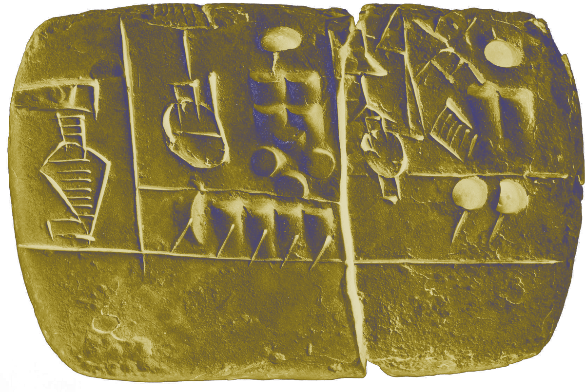
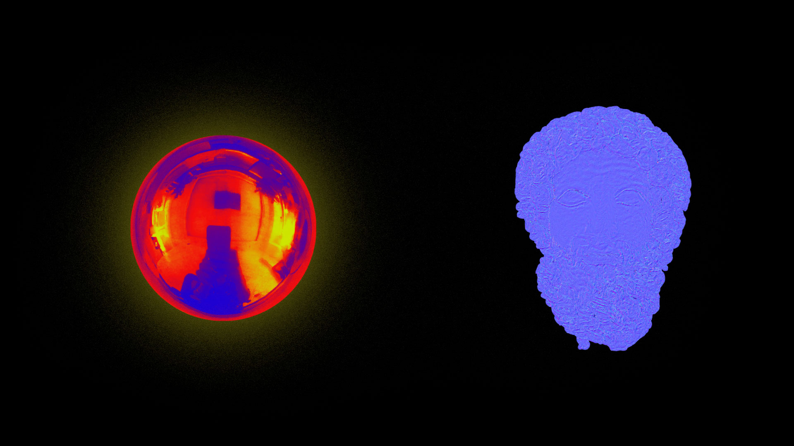
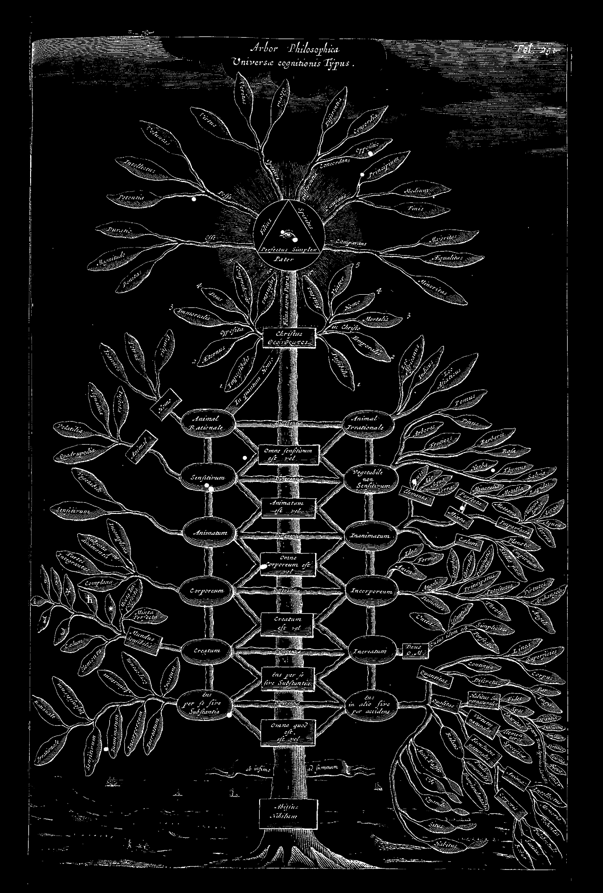

Diese Arbeit zielt darauf ab, die Beziehung zwischen Technologie und Weltanschauungen durch
die Welt der Symbole zu erklären und über die Fiktionen und Werte der Zukunft nachzudenken.
Bezugnehmend auf drei verschiedene Glaubens- und Wertesystemen wird in dem Projekt
ein geschichtlicher Vergleich durchgeführt: Teismus als von den Göttern dominiertes
Weltbild, Humanismus als Ergebnis wissenschaftlicher Entwicklungen und schließlich eine
Spekulation auf ein neues Weltbild, in dem die ganze Welt miteinander vernetzt ist,
Algorithmen und Daten verherrlicht werden: der Dataismus.
Dieser
Vergleich soll anhand folgender zentraler Bildsprachen aufgearbeitet werden: Wolken,
Engel und Baum. Welche Bedeutungen nahmen diese
Phänomene von der Vergangenheit bis zur Gegenwart an, wie haben sie sich verändert und was
werden sie in der Zukunft für uns bedeuten? Um diese Veränderungen zu interpretieren und zu
bewerten, erschaffe ich eine Fiktion durch assoziative Logik, indem ich die Bilder, die das
gemeinsame Gedächtnis der Menschheit prägen, miteinander in Beziehung setze.
✺ Dataismus
Wir können beobachten, dass die Entwicklung des Internets im Vergleich zu der der
Menschheitsgeschichte eine sehr rapide ist, an die wir uns als Nutzer*innen sehr schnell
angepasst haben. Wir hegen wenig Skepsis gegenüber dieser Entwicklung, was sich an unserem
zuweilen gutgläubigen Nutzungsverhalten widerspiegelt. Auch wenn wir in der Lage sind, uns
schnell an die Technologie anzupassen, können unsere Werte mit dieser Geschwindigkeit
mithalten? Werden unsere ethischen Werte und Glaubenssysteme in ferner Zukunft noch Bestand
haben oder ist es Zeit für eine neue Weltanschauung? Für diese Weltordnung, bei der alle
Menschen, sogar alle Endgeräte, miteinander verbunden sind und alles aufgezeichnet wird,
wurde ein neues Konzept eingeführt: der Dataismus. Der Dataismus kann uns helfen zu
verstehen, was mit uns passiert, wenn wir diese Entwicklungen als Ganzes betrachten.
✶ Mark Zuckerberg motiviert uns durch sehr freundliches Interface, unsere Daten
freiwillig preiszugeben —Facebook Developer Conference F8 2018
✶ Alexander Nix mit Heiligeschein. The Power of Big Data and Psychographics -Cambridge
Analytica, 2016
✶ flächendeckender Einsatz von Gesichtserkennung in China. Die technischen
Hintergründe sind die selben, jedoch unterschiedliche interfaces. —China
Der Dataismus verfolgt: If you experience something - record it. If you record
something - upload it. If you upload something - share it. -Yuval Noah Harari, Homo
Deus.
Der Begriff Dataismus beinhaltet grundlegend die Idee, dass
Big Data das Leben des Menschen verbessert.
Schon seit dem Jahr 2009 wird der Begriff
verwendet; fand jedoch im Jahr 2013 mit einem Artikel von David Brooks in der New York Times eine
festere Definition. Für Brooks ist der Dataismus die Philosophie der Gegenwart.
Nach Brooks
liefern Daten zuverlässige und transparente Informationen, die eine Realität herstellen, welche
nicht von emotionalen und ideologischen Barrieren verwischt wird. Weiterhin verspricht er sich
durch das Speichern und Sammeln von Daten eine sichere Voraussage der Zukunft, was wiederum großen
Einfluss auf das Weltgeschehen haben kann.
Wissenschaftler für Neue Medien Prof. José van
Dijck hingegen hat, was die Sorgen derartiger Anpassung angeht, eine wichtige Feststellung gemacht.
So sieht sie in der Praxis des Dataismus: “a collective belief in the quantification and potential
tracking of all kinds of human behaviour through online media technologies. (...) An implied trust
in the various (institutional) agents that collect, interpret, and repurpose (meta)data culled from
online platforms.”
Eine weitere Stimme aus dem Jahr 2016 ist die des Sozial - und
Geschichtswissenschaftlers Yuval Noah Harari. Er geht noch einen Schritt weiter und sieht im
Dataismus bestimmte Rituale, die den Informationsfluss als “höchstes Gut” einstufen und somit eine
Art Glaubenssystem kreieren. So schreibt Yuval Noah Harari: "Dataismus erklärt, dass das Universum
aus Datenflüssen besteht und der Wert eines Phänomens oder einer Entität durch seinen Beitrag zur
Datenverarbeitung bestimmt wird."
✶ Touchscreen, Segnung durch den Papst. —AP, 2016
✶ Information as a weapon. —Ahmad Gharabli, Palestine 2017
Data ist überall und allwissend und allmächtig. Jedes Wort ist Data. Jede Tat ist
Data, jeder Gedanke und jedes Gefühl. Dasein ist Datasein. -Bulgan Molor-Erdene, Leon
Pfannenmüller und Lion Bischof
Dataismus erklärt, dass das Universum aus Datenflüssen besteht und der Wert eines
Phänomens oder einer Entität durch seinen Beitrag zur Datenverarbeitung bestimmt wird. -Yuval
Noah Harari, Homo Deus.
Harari betitelt den Dataismus als neues Glaubenssystem und
vergleicht ihn mit dem humanistischen Weltbild, was einstweilen als Ironie wahrgenommen werden
kann. Für Harari jedoch hängen alle Ideologien auf eine bestimmte Art und Weise zusammen oder
kreuzen sich. Er stellt den Humanismus also nicht konträr zum Dataismus. Beispielsweise habe sowohl
der Kapitalismus als auch der Kommunismus bestimmte humanistische Rituale und Bekenntnisse. So
gesehen ist die Gemeinsamkeit aller “-ismen” , dass Menschen sich mit ihren Geschichten und Werten
begegnen, diese miteinander teilen und durch eine auf gemeinsamen Werten und Vorstellungen
basierenden Ordnung, eine Grundlage für ein Leben in auch großen Gemeinschaften schaffen.
Hier
kommen nun die verschiedenen Glaubenssysteme ins Spiel. Das kapitalistische System, die gemeinsame
Idee, dass die Wahrheit im Geld liege, motiviert Millionen von Menschen, dieses System aufrecht zu
erhalten. Im Kommunismus glaubt die Mehrheit an die Gleichheit des Menschen, was wiederum für die
Verfestigung dieses Systems sorgt. Der gemeinsame Nenner ist im Grunde der Glauben. Der Glauben an
uneingeschränkten Wirtschaftswachstum, an Geld, an Gleichheit, an Menschenrechte oder an Gesetze
von Staaten… all dies sind von Menschen gemachte Geschichten und können als Glaubenssystem gesehen
werden. Und diese Geschichten sorgen für Zusammenhalt. Das Einordnen des Dataismus als
Daten-Religion basiert auf eben diesem Prinzip.
Die Reduktion der Angst
Der Dataismus vermittelt Sicherheit und
reduziert somit Ängste indem er die Fähigkeit besitzt, die Zukunft vorauszusagen und mithilfe
komplexer Algorithmen Lösungen zu entwickeln.
Das Verleihen eines Sinnes
Durch das ständige Produzieren und Teilen
von Daten sowie die Vernetzung dieser Datenströme ist jedes Individuum wichtiger Bestandteil des
Ganzen und sein Mitwirken wird zur guten Tat für das Grosse. Dies wird als sinnstiftend erlebt.
Die Vermittlung moralischer Werte
Während im Dataismus die Macht der
Daten und Algorithmen diese übermenschliche Ordnung darstellt, lassen sich auch menschliche Werte
und Normen ableiten wie die Tugend des Teilens, das Gebot, den Datenfluss nicht zu unterbrechen und
diesen stets zu maximieren.
Neben dem beschriebenen Gemeinschaft stiftenden Aspekt dienen
Glaubenssysteme auch dem Beantworten offener Fragen und haben somit etwas Sicherheit stiftendes.
Dass Gott oder Gottheiten die Welt oder das Universum beherrschen können hängt auch damit zusammen,
dass sie allwissend sind. Wissen und Weisheit sind auch in Religionen eine wichtige Komponente.
Dies möchte ich im Folgenden näher erläutern.
In der Menschheitsgeschichte stießen Menschen
immer wieder auf Ereignisse, die sie in ihrem beschränkten Weltverständnis nicht einordnen konnten
und somit unbeantwortete Fragen für Verunsicherung sorgten. An dieser Stelle entstanden Religionen,
die Antworten auf alle Fragen und eine Orientierung an einem vertrauensvollen Sicherheit
versprechenden System boten. Naturphänomene beispielsweise (wie Erdbeben, Tod, Blitz etc.) konnten
durch die Existenz Gottes, Gottes Gesetze und dessen Wirken erklärt werden.
Die Geschichte der Menschen ist die Geschichte von Kämpfen um die Deutungshoheit über
Daten. -Anonym
Geschichten, Gebräuche, Symbole und Mythen sind nicht mehr nur in ihrer Herkunft
verankert, sondern werden dadurch definiert, wie jeder Mensch sie heute ansammelt und aufnimmt. So
wie das Internet eine neue Ära des Mischens und Remixens eingeläutet hat. -Anonym
In unserer heutigen Lebenswelt befinden wir uns in einem
völlig gegensätzlichen Zustand und dennoch ähnelt er in gewisser Weise dieser vorwissenschaftlichen
Zeit. Wir leben heute in einem “information overload”, der die Kapazität der Menschen weitaus
übersteigt. Es gibt heute so große Massen an Wissen, unsere Lebensumstände und das System, in dem
wir leben, ist in seiner Komplexität in rasender Geschwindigkeit dem menschlichen Gehirn und seinen
Fähigkeiten vorausgeeilt, sodass wir uns diesmal nicht durch Unwissenheit, sondern durch
Überforderung aufgrund unüberschaubarer Wissensmassen, in einem Zustand von Unsicherheit und
Ungewissheit befinden und uns letztlich nur der Glaube an ein höhergestelltes Sicherheit
vermittelndes System bleibt. Das ist der Dataismus. In der Gewissheit, dass ein ständiges
Hinterfragen, ein Versuchen alles zu verstehen, uns an unsere Grenzen bringt und folglich ständig
zu Verunsicherung und Angst führt, kapitulieren wir, indem wir uns fromm dem völkerübergreifenden
Glaubenssystem unterordnen; in bestem Gewissen, das Übermenschliche möge uns sicher durch das Leben
führen und für uns sorgen.
Seit Tausenden von Jahren glaubten die Menschen, dass die
Autorität von den Göttern kam. Während der Neuzeit verlagerte der Humanismus allmählich die
Autorität von Gottheiten auf die Menschen.
So wie göttliche Autorität durch religiöse
Mythologien legitimiert wurde und menschliche Autorität durch humanistische Ideologien legitimiert
wurde, erschaffen High-Tech-Gurus und Silicon Valley-Propheten eine neue universelle Erzählung, die
die Autorität von Algorithmen und Big Data legitimiert. So wie der Menschheit eingebläut wurde,
dass die Pläne Gottes nicht zu verstehen seien, so werden uns auch die Algorithmen Gleiches
zuflüstern. Das ist also die Zukunftsvision des Dataismus.
✺ Wolken
Die auf den Wolken lebenden Götter prägten über Tausende von Jahren unser Leben und unser
Weltbild. In der zweiten Hälfte des 20. Jahrhunderts lebten wir im Schatten einer anderen
Wolke: der Pilzwolke der Atombombe. Wird nun die Cloud der Informationsnetze zur utopischen
Metapher der vernetzten Welt?
Der fruchtbare Halbmond, in dem die neolithische Revolution
begann und sich auf die Welt ausbreitete, veränderte radikal die Lebensweise und das Weltbild der
Menschen. Die Menschen orientierten sich an der Position von Mond, Sonne und Sternen, um den Wandel
der Jahreszeiten zu bestimmen und konnten durch ein besseres Verständnis der klimatischen
Bedingungen sowie des Wetters eine landwirtschaftliche Gesellschaft aufbauen. Anu, der älteste und
wichtigste Gott der Sumerer, der den ersten Staat der Menschheitsgeschichte begründete, ist der
Gott des Himmels. Er ist das älteste Beispiel, das mit dem Himmelsvater-Konzept der vergleichenden
Mythologie verbunden ist. Die Himmel – Land – Wasser Triade entsprang den Prioritäten der
Agrargesellschaft.
✶ A Typical Data Center - USA, Texas
✶ Der Nabu Tempel, Tontafeln Archiv - Mesopotamia, Iraq. Nabu bedeutet alter
mesopotamischer Schutzgott der Schreibkunst
✶ Cuneiform tablet: administrative account with entries concerning malt and barley
groats. -MET Museum - The Origins of Writing
Die Zunahme der landwirtschaftlichen Produktion und der enorme
Zuwachs der Bevölkerung führten zu einer unvermeidlichen Entwicklung: Schrift und Datenspeicherung.
Der sich ausweitende Handel brachte das menschliche Gedächtnis an seine Grenzen und es
bedarf der Schrift zum Zwecke von Aufzeichnungen. Die ältesten schriftlichen Dokumente der
Geschichte stellen verschiedene Rechnungen dar. Mit dem Aufkommen der Schrift gesellte sich zu den
anderen Göttern ein neuer: Nabu war der literarische Gott der Sumerer und in seinen Tempeln
befanden sich große Archive mit Keilschrifttafeln. Das heutige Pendant zu diesen monumentalen
Gebäuden sind unsere Datenzentren. Beide sind die höchste Ebene der zentralen
Datenspeichertechnologie der jeweiligen Zeit. Diese architektonische und funktionale Ähnlichkeit
zwischen ihnen erinnert uns daran, dass die Datenverarbeitung und -speicherung seit Jahrtausenden
die Quelle der Macht und Autorität ist.
Der literarische Gebrauch von Schrift wird deutlich später
kommen. Das älteste literarische Werk, das Gilgamesch-Epos, ist die Geschichte eines Königs, der
Unsterblichkeit suchte. Infolge verschiedener Abenteuer wird der König akzeptieren, dass er sterben
wird, und er wird zu dem Schluss kommen, dass die wahre Unsterblichkeit darin besteht, dass sein
Name von zukünftigen Generationen erinnert wird. Die Unsterblichkeit von Gilgamesch scheint vorerst
zu funktionieren. Nach 5000 Jahren lesen wir seine Geschichte noch heute.
✶ God, suspended in the clouds, creates light. Line engraving by Thomas de Leu
✶ Decke des Sala dei Giganti im Palazzo Te — Mantua
Anu, der große Himmelsgott der Sumerer, inspirierte später
viele verschiedene Glaubenssysteme und die Fiktion der „Göttlichkeit des Himmels“ verwandelte sich
in verschiedene Erzählungen und Formen von Kultur zu Kultur.
Zeus, der wichtigste und
mächtigste Gott des antiken griechischen Glaubens, ist in ähnlicher Weise der Herrscher des
Himmels. Zeus wird besonders mit Wetterbedingungen wie Blitzen und Stürmen in Verbindung gebracht.
Er wird häufig sitzend auf seinem Thron auf Wolken dargestellt, in der Hand einen Blitz haltend.
In den monotheistischen Religionen wird trotz des Glaubens, dass Gott überall ist, dieser
immer noch, auf alte Traditionen Bezug nehmend, mit Himmel und Wetter in Verbindung gebracht. Alle
abrahamischen Religionen gehen davon aus, dass Gott auf dem Thron im Himmel sitzt. Besonders in der
christlichen Ikonographie können wir viele verschiedene künstlerische Ausführungen des Himmels und
der Wolke als Landschaft beobachten. Gott wird manchmal als menschliche Form dargestellt, die auf
den Wolken sitzt, und manchmal als Lichtstrahl oder Auge, das aus den Wolken kommt.
✶ Der Trinity war die erste jemals durchgeführte Kernwaffenexplosion. New Mexico,
1945
✶ The central icon of the atomic culture is the mushroom cloud, rising above the
lush tropical atolls of the South Pacific or the wastelands of the Great American Desert.
Indeed, it arrived as something close to what Roland Barthes has called a "pure sign"—a
visual icon so unprecedented that, for a moment at least, it lay outside the webs of
signification that comprised a watching culture.
✶ Atomic Dawn, Many Times Noon’s Brightness, Greets a Nevada Family 20 Miles Away.
National Geographic, 1953
Die von den Göttern dominierte Gesellschaftsordnung begann
sich vor einigen Jahrhunderten zu lösen und wurde zu einer modernen Gesellschaft. Der Mensch, der
der Autorität Gottes entronnen war, verkündete seine eigene Göttlichkeit und verherrlichte sich.
Denn die Glaubenssysteme, die seit Tausenden von Jahren die Hauptgrundlage der Gesellschaftsordnung
waren, reichten nicht aus, um alles allein zu erklären.
Der Humanismus erstarkte als
Ergebnis vieler wissenschaftlicher und technologischer Fortschritte zu einer neuen Weltanschauung
und ein Zeitalter, in dem die theistische Weltanschauung dominierend war, kam zu einem Ende. Die
Größe des Menschen, der Wert von Emotionen, Gedanken und Erfahrungen trat in den Vordergrund. Aber
der Humanismus war wie andere Religionen in verschiedene Ansichten aufgeteilt. Das 20. Jahrhundert
erlebte den Kampf zwischen Ideologien wie Kommunismus, Liberalismus und Nationalsozialismus. Dieser
Kampf löste auf militärischer Ebene einige technologische Durchbrüche aus. In seinem
jahrtausendelangen Kampf mit der Natur hat der Mensch eine neue Kraft gewonnen, die als Meilenstein
betrachtet werden kann: die Atomenergie.
Atomos, das im Altgriechischen „unteilbar“
bedeutet, konnte im 20. Jahrhundert schließlich geteilt werden, und es wurde eine enorme Energie
freigesetzt. Die ersten Atombombenexperimente, bei denen diese Technologie zum ersten Mal
eingesetzt wurde, zeigten die stärksten Bilder des Triumphs des Menschen des 20. Jahrhunderts über
die Natur: Die Pilzwolke wurde zu einem der mächtigsten Symbole des vergangenen Jahrhunderts, einem
der Wendepunkte der Menschheitsgeschichte.
✶ 1964 entwickelt Paul Baran eine Netzwerk-Technologie, welche die
"Überlebensfähigkeit im Falle eines Sowjetischen Nuklearangriffs" gewährleisten soll. Daten
werden nicht mehr zentral gesammelt, sondern in einem Netzwerk verteilt. Sein Konzept gilt
als wegweisend für das Hypertext-Prinzip des World Wide Webs.
Nach dem zweiten Weltkrieg lebte die Welt jahrelang im
Schatten von Atomwaffen. Eine Paranoia im Nuklearkrieg führte indirekt zu einem weiteren
technologischen Durchbruch. Ein Kommunikationssystem namens ARPANET wurde vom
US-Verteidigungsministerium entwickelt, das als Vorläufer des Internets gilt. Basierend auf der
Idee von Paul Baran wurde dieses System nicht als zentralisierte Kommunikationsinfrastruktur,
sondern als verteiltes Netzwerk aufgebaut. Im Falle eines möglichen Atomkriegs wäre das Netzwerk
widerstandsfähiger.
Nach dem Ende des Kalten Krieges, Anfang der 90er Jahre, kündigte das
CERN-Labor das Internet an, ein globales Netzwerk, an dem alle teilnehmen können. In kurzer Zeit
wurde es zu einem riesigen Netzwerk, in dem Milliarden von Menschen aktive TeilnehmerInnen waren.
Schließlich entsprang eine neue Technologie namens Cloud Computing, von der wir häufiger hören.
✶ Cloud Computing Werbebild
In den 90er Jahren, als sich das Internet zum ersten Mal
auszubreiten begann, wurde in Diagrammen häufig eine Cloud-Analogie verwendet, um die amorphe und
sich ständig verändernde Struktur des Netzwerks zum Ausdruck zu bringen. Cloud Computing wurde
jedoch später als neues Datenspeichersystem eingeführt. Es handelt sich hierbei um ein Netzwerk von
Servern. Einige davon dienen der Online-Datenspeicherung, andere fungieren als Plattform zum
Datenaustausch. Es basiert auf der Idee der zentralen Datenspeicherung, durch die wir jederzeit von
allen Geräten aus Zugriff auf unsere Daten haben und diese teilen können. Die Clouds sind
allgegenwärtig und immer an unserer Seite. Wenn unser Computer gestohlen wird oder unsere
Sicherungsfestplatten beschädigt werden, ist ein erheblicher Teil unseres Speichers irgendwo in den
Clouds mit der höchsten Sicherheit geschützt. Wir speichern Daten nicht nur in den Clouds, sondern
ermöglichen auch die Aufzeichnung und Kontrolle unserer Netzwerkbewegungen, Vorlieben, Emotionen,
Gedanken und mehr. Während wir unser gesamtes Gedächtnis in die Clouds übertragen, haben diese
bedeutende Informationen über unserer Daten- und Netzwerkaktivitäten in der Hand.
✶ Internet Mapping Project. Die Visualisierung der Internet Netzwerk Struktur
gleicht in der Darstellung häufig einem Neuonennetzwerk.
Heute wird diese Analogie immer bedeutungsvoller. Wolken
verwandeln sich in das Gehirn eines globalen Organismus, in dem das gemeinsame Gedächtnis der
gesamten Menschheit gespeichert wird und die Aktivitäten in sozialen Netzwerken aufgezeichnet und
analysiert werden können. Das globale Netzwerk entwickelt sich allmählich zu einer unverzichtbaren
Erweiterung des kollektiven Gedächtnisses der Menschheit. Wie bei neuronalen Netzwerken entwickelt
und transformiert es sich in unvorhersehbare Formen. Werden die Wolken wieder wie früher zu den
Plattformen, auf denen die Götter leben?
✺ Engel
Über tausende von Jahren spielten fliegende Wesen in den Vorstellungen und Glaubenssystemen
der Menschen eine bedeutende Rolle. In Form von Engeln übernahmen sie die Funktion von
göttlichen Boten, Beschützern oder Wächtern über das Verhalten der Menschen. Im Laufe der
Zeit wurde die Hoheit über die Luft an uns Menschen überreicht. Wir begannen, unser
Vertrauen in die Kraft der Technik zu legen und wähnen uns in Sicherheit dank
Verteidigungskräfte in der Luftfahrt oder über uns schwebende allgegenwärtige Dronen, die
alles sehen. Heute sind wir selbst zu Hauptakteuren eines Überwachungsnarratives geworden,
deren Grundideen seit jeher dieselben sind.
✶ Hermes, Messenger of the Gods, with caduceus from a fresco - Giovanni Battista
Tiepolo, 1696-1770.
✶ Relief depicting Gilgamesh between two bull men supporting a winged sun disk. -
Tell Halaf, Syria. Aleppo Museum
In vielen verschiedenen Kulturen setzte sich die Göttlichkeit
des Himmels mit unterschiedlichen symbolischen Ausdrücken fort. Eine davon ist die
Flügeldarstellung, die in Bezug auf den Himmel auch im ästhetischen Sinne ein starkes Symbol ist.
Von den Sumerern bis heute können wir in vielen alten Zivilisationen des Nahen Ostens häufig
verschiedene geflügelte Wesen, die Ausdruck politischer und religiöser Autorität sind, begegnen.
Eines der ältesten Beispiele für fliegende „Flügel-Wesen“ ist die Flügelsonne. Diese symbolisierte
das Königreich, die religiöse Autorität und die Macht. Im antiken Griechenland trug Hermes, der
Bote von Zeus, einen Zepter, das der Flügelsonne sehr ähnlich ist. Im Zarathustrismus, einem
dualistischen Glaubenssystem, gilt eine andere Darstellung der Flügelsonne immer noch als das
wichtigste Symbol dieser Religion.
Flügel finden sich in sehr unterschiedlichen Abbildungen
von Göttern in menschlichen Körpern oder mythologischen Mischwesen. Eine der beliebtesten Göttinnen
ist Nike, die oft mit Flügeln und in den Händen des Gottes Apollon zu dessen Diensten bereitstehend
dargestellt wird.
✶ Recording angels from the wonders of creation - Al-Qazwini, 1208
✶ Giotto di Bondone, The Mourning of Christ, 1304
Diese fliegenden Wesen, die wir auch Engel nennen, haben es
geschafft, als Gehilfen der Götter auch in anderen monotheistischen Religionen einen Platz zu
finden. Die menschlich aussehenden Engel in der Ikonographie der abrahamischen Religionen sind
lediglich Abwandlungen der alten griechischen und nahöstlichen geflügelten Wesen.
Jeder hat
eine andere Funktion. Einige Engel übermitteln den Propheten die Botschaften Gottes. Andere Engel
nehmen die Rolle eines Beschützers ein. Anderen Engeln wird die Aufgabe der Überwachung bzw.
Protokollierung der guten und schlechten Taten der Menschen zugeschrieben.
✶ The History of the World by Sir Walter Raleigh from the year 1614 includes the
image of an eye with a glory shining around it and then surrounded by cloud with the word
“Providentia” written above it and with the eye overlooking the globe.
✶ Claude Nicolas Ledoux
✶ Das Foto zeigt ein Werbeplakat der Firma Dehomag, eine Tochtergesellschaft der
IBM, für sogenannte Hollerith-Lochkarten, auf denen die Volkszählung von 1933 aufbereitet
und ausgewertet wurde.
Obwohl Überwachung und Kontrolle durch eine globale
Infrastruktur mit der heutigen Technologie entstanden zu sein scheinen, stützen sich diese
Bemühungen auf eine sehr alte Tradition in der Geschichte der Zivilisation. Weit vor der Existenz
von Kameras wurden die Menschen damals mit einem anderen Blick kontrolliert. Dieses Auge eines
mystischen, unsichtbaren Wesens, das die Fähigkeit besitzt, jeden Gedanken und jedes Handeln zu
überwachen, hatte einen starken psychischen Effekt auf die Gläubigen. Die Botschaft war deutlich:
Gott sieht alles. Die Erde wird ständig von den Göttern am Himmel mit Unterstützung verschiedener
Helfer überwacht und kontrolliert. Es gibt keine Möglichkeit, sich aus deren Blickfeld zu befreien
oder sie zu täuschen. Seit Tausenden von Jahren zügeln sich gläubige Menschen ständig mit diesem
Überwachungsnarrativ.
✶ Der Komet von 1532 in einem Holzschnitt von P. Apian
✶ Ckopernikanischen Revolution versteht man die Abkehr vom geozentrischen (d. h.
auf die Erde bezogenen) Weltbild, die sich im 16. und 17. Jahrhundert in Europa vollzog.
✶ This is surely the most famous book in the history of astronomy, opened at its
most famous page, where in a woodcut print Copernicus boldly places ‘Sol’, the sun, at the
centre of the cosmos.
In der Renaissance wurde die Macht der religiösen Autoritäten
und Erzählungen durch den Einfluss der wissenschaftlichen Entwicklungen erschüttert. Die von
religiösen Quellen beschriebenen himmlischen Phänomene, die seit Tausenden von Jahren aufbewahrt
worden waren, konnten keine zufriedenstellende Erklärung mehr liefern.
Diese radikale
Veränderung in der Wahrnehmung der Menschen war sicherlich nicht einfach. Im Laufe der Geschichte
wurden antike Philosophen, Denker und Astronomen im mittelalterlichen Europa unter dem Druck einer
theistischen Weltanschauung vor Gericht gestellt, und einige von ihnen wurden hingerichtet. Das
erste Observatorium in Istanbul in der osmanischen Zeit musste geschlossen werden, da den
Astronomen nachgesagt wurde, sie würden mit einem Teleskop die Beine der Engel beäugen.
Die
Entwicklungen in der Astronomie haben letztlich die theologische Weltsicht grundlegend erschüttert
und spielten eine wichtige Rolle in der Zeit, als die Macht von den Göttern auf die Menschen
übertragen wurde. Diese radikale Veränderung hat den Weg für wissenschaftliche Entwicklungen in
vielen Bereichen geebnet. Nach diesem Stadium begann der Mensch, nachdem er sich von den Ketten der
Götter befreit hatte, allmählich den Himmel zu beherrschen.
✶ Otto Lilienthal war wohl der erste Mensch, der erfolgreich und wiederholt
Gleitflüge mit einem Flugzeug (Gleitflugzeug) absolvierte und dem Flugprinzip „schwerer als
Luft“ damit zum Durchbruch verhalf. 1894
✶ Goddard was the first scientist who not only realized the potentialities of
missiles and space flight but also contributed directly in bringing them to practical
realization.
✶ One of the first images taken by humans of the whole Earth. The crew of Apollo 8
sent the first live televised pictures of the Earth and the Moon back to Earth, and read
from the creation story in the Book of Genesis, on Christmas Eve 1968.
✶ United States postage stamp celebrating Apollo 8, the first manned mission to
orbit the Moon.
Im 20. Jahrhundert war der Kampf der humanistischen Werte -
wie für viele andere Bereiche - auch in der Luftfahrt von entscheidender Bedeutung für den
technischen Fortschritt. Die Herausforderungen des Krieges brachte die Dominanz des Himmels in
kurzer Zeit zum Höhepunkt. Rund 40 Jahre nach den ersten fliegenden Luftfahrzeugen wurden im
Zweiten Weltkrieg erstmals Raketen benutzt. Nach dem Krieg hat diese neue Motorentechnologie den
Weg für die Raumfahrt des Menschen geebnet.
Während des Wettkampfes im Weltraum zwischen
den Nachkriegs-Supermächten wurden Tausende von Raumflugkörpern zur Überwachung, Navigation und
Kommunikation in den Weltraum geschickt. Mit dem Apollo-Programm machten die USA die erste Reise
zum Mond. Der Name Apollo stammt von dem griechischen Gott Apollo ab, der seinen Pfeil in die
weiteste Entfernung werfen konnte und seinen Wagen in Richtung Sonne fuhr.
Die ersten
Bilder der Erde, die während dieses Weltraumabenteuers des Menschen aus dem Weltraum abgelichtet
wurden, zählen wahrscheinlich zu den beeindruckendsten Bildern dieser Zeit und sind zum Symbol
eines weiteren Wendepunkts in der Geschichte der Menschheit geworden. Diese Bilder sind die
konkreten Abbilder des Sieges in diesem jahrtausendelangen Abenteuer des Menschen.
✶ Voyager II
✶ Die „Voyager Golden Record“ ist eine kupferne Datenplatte, die zum Schutz vor
Korrosion mit Gold überzogen wurde. Auf ihr sind Bild- und Audio-Informationen über die
Menschheit gespeichert. Auf der Vorderseite befindet sich unter anderem eine Art
Gebrauchsanleitung und eine Karte, die die Position der Sonne in Relation zu 14 Pulsaren
zeigt.
✶ Das Space-Based Infrared System, ist ein im Aufbau befindliches US-amerikanisches System von Raketen-Frühwarn-Militärsatelliten, das die Nachfolge des Defense Support Programs (DSP) antritt.
Pioneer und Voyager 1 haben unter diesen Raumfahrzeugen einen
besonderen Stellenwert. Diese Raumsonden beherbergen einige Aufzeichnungen mit der Absicht,
außerirdische intelligente Lebensformen oder zukünftige Menschen zu finden. Auf einer goldenen
Scheibe wurden Entdeckungen, verschiedene Details der Zivilisation und das Leben auf der Erde
gespeichert. Diese auserlesenen Dokumente spiegeln die humanistische Perspektive einer Ära wider
und fliegen nun irgendwo in den Tiefen des Weltraums außerhalb des Sonnensystems herum.
Gleichzeitig sind diese Aufzeichnungen das vom Menschen erschaffene am weitesten entfernte Objekt.
✶ Surveillance Drones
✶ Im Handwerk der Teppich-Webkunst Afghanistans finden sich Kriegsflugzeuge wo
einst nur traditionelle religiöse Symbole Platz hatten.
Sowie das Zeitalter der Aufklärung eine Ordnung beendet hatte,
die von Göttern und Engeln im Himmel beherrscht wurde, wurden neue mit derselben Funktion
erschaffen. Zahlreiche Luftfahrzeuge, die die Erde ständig beobachten, aufzeichnen, Kommunikation
ermöglichen, manchmal den Tod bringen, manchmal Hilfspakete versenden, haben inzwischen die
einstigen Aufgaben der Engel übernommen. Diese Fahrzeuge tragen manchmal den Siegeskranz wie es
früher Nike tat. Manchmal verwandeln sie sich in Schutzengel, die uns vor Terroristen schützen. Wir
können diese Gemeinsamkeiten wie folgt interpretieren: Die Legitimität einer globalen Überwachung
beruht seit langem auf einer tief verwurzelten Tradition.
✶ Netzwerkstruktur einer Gesichtserkennung
✶ Aufnahmen einer Demonstration, aufgenommen von einer Drohne.
Jedes Gerät, das uns auf verschiedenen Ebenen erfasst, von
Satelliten und Drohnen bis hin zu Kameras und Mobiltelefonen, übernehmen für uns eine Art
Schutzfunktion. Heute sind wir von einem globalen Überwachungsnetzwerk umgeben. Viele Dinge werden
beobachtet und aufgenommen. Ironischerweise hat sich das einstmals befreiende Informationsnetz des
Internets zu einem Überwachungsmechanismus entwickelt. Im Internet teilen Milliarden von Menschen
ihr persönliches Wissen, ihre Erfahrungen, Lebensgeschichten, Fingerabdrücke, Netzwerkbewegungen
und sogar Gesichtszüge. Immer mehr Benutzer*innen sind vertrauensvoll, was Technologieunternehmen
angeht. Die Menschen haben diese Situation akzeptiert, indem sie glaubten, sie hätten nichts zu
verbergen.
Heute ist die Situation etwas anders als in der Vergangenheit. Bei der
Überwachung geht es nicht nur um uns. Dies hat sich in unserem täglichen Leben zu einer Aktivität
entwickelt. Wir benötigen Kameras oder Ortungsgeräte, um unsere Häuser und Gegenstände zu schützen.
Wir überwachen unsere Kinder, wir prüfen die Profile anderer durch soziale Medien, wir
dokumentieren unsere Umwelt und unseren Lebensstil und teilen dies. Wir sind die Hauptakteure der
Überwachung mit unserem eigenen Willen, bewusst oder unbewusst. Wenn wir die Überwachungskultur
seit der Vergangenheit betrachten, können wir erkennen, dass diese Situation auf einen neuen
Lebensstil und eine neue Weltsicht für die Menschheit hindeutet.

✺ Baum
Von prähistorischen Zeiten bis heute ist der Baum in einem sehr breiten Gebiet ein
universelles Glaubenssymbol. Er wird seit jeher mit Unsterblichkeit, Gleichgewicht aber
auch Wissen in Verbindung gebracht und die von einem Zentrum beginnende fortlaufende
Verästelung wurde schon früh für die Kategorisierung und Visualisierung verschiedener
(komplexer) Sachinhalte benutzt. Auch heute können die unser Leben maßgeblich bestimmenden
Algorithmen als eine Art Baum des Lebens gesehen werden, deren ebenso baumähnlichen
Verästelungen sich heute für uns hinter einem einfachen Interface verstecken, denen jedoch
ebenfalls eine göttliche Macht und Attribute wie Unsterblichkeit, Allwissen oder Fähigkeit
der Zukunftsprophezeiung zugesprochen werden.
✶ Art and Picture Collection, The New York Public Library. "Circular Breast
Ornament On A Royal Robe (Nimrud).
✶ Bible. O.T. Genesis 3.1-6. The serpent is portrayed in a bizarre female form,
with a child's face and an old woman's breasts. Scenes of work and basic shelter are shown
in the background
✶ Philippe d' Aquin's Tree of the Kabbalah. Paris 1625
Der Baum des Lebens, allgemeiner der Begriff des heiligen
Baums, ist ein verbreiteter Archetyp mit einer außerordentlichen Vielfalt in verschiedenen
Mythologien, religiösen und philosophischen Traditionen. Er wird mit Unsterblichkeit, Fruchtbarkeit
und Gleichgewicht assoziiert. Der Baum des Lebens wird auch in den mystischen Traditionen als ihre
Lehren erklärendes Diagramm gesehen. Das Phänomen des heiligen Baumes taucht auch in den
abrahamitischen Religionen auf. In der Schöpfungsgeschichte wird die verbotene Frucht auch die
„Frucht des Baumes der Weisheit“ genannt.
Diese Frucht wird dem Mythos zufolge von Gott
verboten. Adam und Eva, die nicht auf dieses Verbot hören, werden dazu verdammt, auf der Erde zu
leben und so werden sie aus dem Himmel vertrieben. Die Metapher des Baumes der Weisheit, das Wissen
um das Gute und das Böse, symbolisiert die unbestreitbare Weisheit Gottes. Der Mensch, der die
Frucht der Weisheit Gottes isst, hat die Weisheit der kosmischen Ordnung erreicht, also den Willen
zu entscheiden, welches Lebewesen leben und welches sterben wird. Es gibt eine bemerkenswerte
Beziehung zwischen dem Mythos der himmlischen Vertreibung und der neolithischen Revolution. Die
Menschen haben ihre Lebensweise, in der sie Hunderttausende von Jahren gelebt hatten, aufgegeben,
indem sie die Frucht der Weisheit Gottes gegessen und das Dorfleben bevorzugt haben. Auf diese
Weise entzogen sich die Menschen dem Kreislauf der Natur und schufen ihre eigenen Götter in den
künstlichen Ökosystemen. Entscheidungen wie welche Tiere nützlich sind, welche Pflanzen
domestiziert werden, wie viele Kinder geboren werden, wurden nun nicht mehr durch die Gesetze der
Natur bestimmt, sondern durch die menschliche Produktion. Dies ist der Beginn aller Zivilisationen
der Erde.
✶ Kircher’s Philosophical tree representing all branches of knowledge, from Ars
Magna Sciendi (1669), p. 251.
✶ Ramus, sixteenth century, the structure of logic.
Seit der ersten Initiative zur Datenspeicherung haben die
Menschen auf unterschiedliche Weise mit dem zunehmenden Wissen und der Komplexität der Daten zu
kämpfen. In Archiven und Bibliotheken wurde altes Wissen seit der Vergangenheit von einer
privilegierten literarischen Priesterklasse sorgfältig aufbewahrt. Gelehrte haben begonnen,
mittelalterliche Baumzeichnungen zu verwenden, um die Informationsteilchen in eine übersichtliche
Ordnung zu bringen. Mit ihren Verzweigungen und dem Stamm ist die Struktur des Baums zu einem
leistungsstarken Werkzeug zur Datenvisualisierung geworden, das viele Arten von Informationen auf
hierarchische Weise kategorisiert und klassifiziert. Diese Analogie verwenden wir auch heute noch
häufig. Indem wir uns durch ähnliche Baumdiagramme navigieren ordnen wir unsere Dokumente.
✶ Bombe computing device, made by national cash register, used to aid decryption of
german enigma cypher, ww2 An Enigma decryption machine, called a "bombe."
✶ I believe that at the end of the century, the use of words and general educated
opinion will have altered so much that one will be able to speak of machines thinking
without expecting to be contradicted. — Alan Turing
Alan M. Turing — Mind, Victoria University of
Manchester.
Doch das menschliche Gehirn, das ständig mit der enormen
Anhäufung von Wissen und Datenspeicherung zu kämpfen hat, konnte mit diesem Datenstrom nicht
mithalten. Im frühen 20. Jahrhundert erreichte das menschliche Gehirn die Grenzen der
Datenverarbeitung und übertrug es auf die Maschinen. Alan Turing, ein englischer Mathematiker, war
Teil eines Teams, das im Zweiten Weltkrieg mit der Entschlüsselung hoch verschlüsselter
Informationen beauftragt wurde. Er erkannte, dass es Jahre dauern würde, die geheime Korrespondenz
zu entschlüsseln und so brachte er die Idee von Datenverarbeitungsmaschinen ein, die mittels
Algorithmen ebendiese Entschlüsselung verrichten können. Durch das Entschlüsseln der Passwörter
mithilfe der von ihnen entwickelten Maschine konnte der Ausgang des Krieges gewendet werden.
Gleichzeitig wurde hiermit die konzeptionelle Basis moderner Computer und künstlicher Intelligenz
gelegt. Von hier an begann das Zeitalter der Datenverarbeitungsmaschinen, in dem komplexe
Berechnungen zunehmend schneller und genauer als vom menschlichen Gehirn durchgeführt werden
konnten.
Die Frage, die Turing stellt, ist auch heute noch wichtig: Können Maschinen
denken?
✶ Deep Blue war ein von IBM entwickelter Schachcomputer. Deep Blue gelang es 1996
als erstem Computer, den damals amtierenden Schachweltmeister Garri Kasparow in einer
Partie mit regulären Zeitkontrollen zu schlagen. 1997 gewann Deep Blue gegen Kasparow einen
ganzen Wettkampf aus sechs Partien unter Turnierbedingungen.
Ein weiterer wichtiger Schritt für Maschinen, über das
hinauszugehen, wozu der menschliche Verstand in der Lage ist, war die Niederlage des Schachmeisters
Kasparov 1997 gegen den Computer namens Deep Blue. Der menschliche Geist wurde von einer Maschine
besiegt. Die im Fernsehen ausgestrahlten Bilder des Kasparovs wie er den Kopf auf die Hände stützt,
wurden zum Symbol des Beginns einer neuen Ära.
Computer haben sich schnell in allen Bereichen bewährt und mit
dem Internet-Netzwerk war es möglich, riesige Datenmengen zu speichern und mit verschiedenen
Algorithmen zu analysieren. Heutzutage ist es fast nicht mehr möglich, Daten ohne Computer zu
verarbeiten. Es ist schon so weit gekommen, dass nicht-digitale Daten in der heutigen Welt nichts
mehr bedeuten. Alte analoge Aufnahmen werden schnell auf digitale Medien übertragen. Das einzige,
was fortan all diese Informationen verwerten kann, sind Computer und deren Algorithmen.
Große
Datenmengen und Algorithmen haben sich in vielen Bereichen, von Finanzinstituten, über Meteorologie
oder Gesundheit, bis hin zu Politik bewährt. Die Quelle des Erfolgs und der Zuverlässigkeit von
Algorithmen ist ihre Fähigkeit, ausgehend von bestimmten Mustern äußerst erfolgreich Vorhersagen zu
treffen.
Durch die Analyse der Daten befinden wir uns in einer Zeit, in der sich selbst
weiterentwickelnde und lernende künstliche Intelligenz möglich ist und sehr treffsichere
Entscheidungen getroffen werden können. Technologieunternehmen wollen uns so gut wie möglich
kennenlernen. Sie möchten alle unsere Emotionen kennen. Wenn wir genug Informationen teilen und
austauschen, wissen Algorithmen in der Zukunft besser als wir selbst wer wir sind. Dies erreichen
sie, indem wir alle kontinuierlich zum Datenfluss beitragen. Wir werden aufhören, auf die innere
Stimme zu hören, wie es uns der Humanismus einst nahegelegt hat. Die Menschen werden Algorithmen
brauchen, um schwierige Entscheidungen treffen zu können.
Was ist also die Quelle dieser Algorithmen? Heute werden sie
hauptsächlich von Software-Entwickler*innen und Mathematiker*innen entwickelt. An sich ist es
zunächst ein von Menschenhand gesteuertes Netzwerk, wo jede*r Mitarbeiter*in ein kleines Zahnrad
darstellt. Trotzdem kann man die Algorithmen nicht als Ganzes verstehen, da die Maschinen sich
selbst optimieren (machine learning), ihre Fehler selbst korrigieren, eigene Strategien entwickeln
und sich so mehr und mehr verselbständigen.
So wie der Menschheit eingebläut wurde, dass
die Pläne Gottes nicht zu verstehen seien, so werden uns auch die Algorithmen Gleiches zuflüstern.
Das ist also die Zukunftsvision des Dataismus.


{kind=link}
{kind=link}
{kind=link}
{kind=link}
{kind=link}
{kind=link}
{kind=link}
{kind=link}
{kind=link}
{kind=link}
{kind=link}
{kind=link}
{kind=link}
{kind=link}
{kind=link}
{kind=link}
{kind=link}
{kind=link}
{kind=link}
{kind=link}
{kind=link}
{kind=link}
{kind=link}
{kind=link}
{kind=link}
{kind=link}
{kind=link}
{kind=link}
{kind=link}
{kind=link}
{kind=link}
{kind=link}
{kind=link}
{kind=link}
{kind=link}
{kind=link}
{kind=link}
{kind=link}
{kind=link}
{kind=link}
{kind=link}
{kind=link}